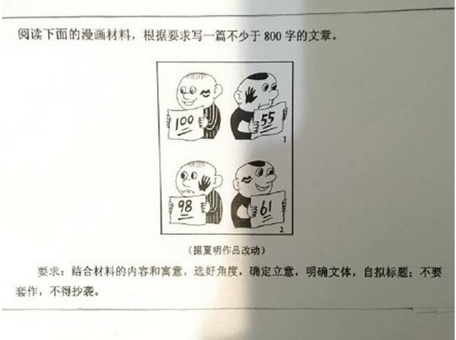

我们看看邻居家的孩子作文题——法国的高考作文题目是这样出的
 320
320

2016年广东高考作文题
铺天盖地的高考作文题盘点已经太多，今天给大家看看法国的同学们高考考什么作文，我们一起涨姿势，长见识，比较之下当然还有反思。
法国的中学会考是中学生毕业升学前的惟一考试，相当于将中国的高中毕业考试和高考合二为一，所以也可以算是“高考”。我们先来看看法国高考作文怎么出题，出什么题，想考学生什么。
法国中学生分为文科、理科、社会经济科、音乐舞蹈专科，不同专业的题目各不相同。不是统一卷。
不论哪一科，统统都是给三道题，让考生选其中一道作为题目。最后一道题无一例外地是与哲学有关。给出一段哲学文本，要么让考生解读、阐释，要么让考生点评、分析。对着经典，你要发表自己的看法。
不论哪一科，三道题里的前两道题都是议论文，让考生针对一个实际的问题，做出自己的判断，并陈述理由。议论文的题材，绝大部分是在考生身边发生的社会议题、公民议题。考生在考场上面对的题目，可能正在市议院被各方议员们争论不休，也或许正在街头引发对立人群的激烈冲突。这些都是考生将来走上社会很可能亲身遭遇的难题。（对，法国高考作文题没有“这世界需要你”“回到原点”之类的扯淡鸡汤。）不同的人会有不同的看法，没有标准答案。考生自己确定自己的立场，言之有据即可。
通过这些分析我们也能揣测法国高考命题人的某些良苦用心；让考生直面实际问题，或针对某些形而上问题（如“我们能否对真理漠不关心？”），描述、分析事实，形成自己的判断，并陈述理由。在这里，修辞不是第一位的，说理能力才是。
已然不知所云？不要紧，看看他们历年的作文题就明白了。
2015年法国高中会考作文
文科考生试题 / Série L (littéraire)（三选一）
1. 尊重所有生命是一种道德义务吗？（Respecter tout vivant est-ce un devoir moral?）
2. 我是由我过去经历所塑造的吗？（Suis-je ce que mon passé a fait de moi ?）
3. 对法国政治哲学家亚历西斯·德·托克维尔《论美国的民主》中的一段文本作出解读。（Explication d’un texte extrait de “De la démocratie en Amérique” d’Alexis de Tocqueville）
“无论什么时代，或多或少总是存在着专断的信仰。信仰产生的方式不同，其形式和对象也会产生变化；但是完全没有信仰，就是说没有人们不经争论、放心接受的意见，那是不可能的……”
“Les croyances dogmatiques sont plus ou moins nombreuses, suivant les temps. Elles naissent de différentes manières et peuvent changer de forme et d’objet ; mais on ne saurait faire qu’il n’y ait pas de croyances dogmatiques, c’est-à-dire d’opinions que les hommes re?oivent de confiance et sans les discuter……”
社会经济科考生试题 / Série ES (économique et social)（三选一）
1. 个人意识只是对个人所属社会的反映？(La conscience de l’individu n’est-elle que le reflet de la société à laquelle il appartient?)
2. 艺术家在作品中要给出什么东西让人理解吗？(L’artiste donne-t-il quelque chose à comprendre?)
3. 对荷兰哲学家斯宾诺莎《神学政治论》中的一段作出解读(Explication d’un texte extrait du “Traité théologico-politique” de Spinoza)
“在民主国家里，不用担心会有荒谬的命令，因为要在大会上使大多数人接受一个荒谬的意见，这几乎是不可能的……”
“Dans un état démocratique, des ordres absurdes ne sont guère à craindre, car il est presque impossible que la majorité d’une grande assemblée se mette d’accord sur une seule et même absurdité……”
理科考生试题/ Série S (scientifique)（三选一）
1. 政治与真理无关？（La politique échappe-t-elle à l’exigence de vérité ?）
2. 艺术品总包含着一定的意义？（Une ?uvre d’art a-t-elle toujours un sens?）
3. 对古罗马哲学家西塞罗的《论神性》的一段作出解读（Explication d’un texte extrait de “De la divination” de Ciceron）
“任何事件都有能说明其产生的原因或预示其发生的迹象，通过这些原因和迹象，我们就可以对一个事件作出预见。那些通过计算研究天体的人，总是在日食和月食发生很多年前就作出了预告……”
“Comment peut-on prévoir un événement dépourvu de toute cause ou de tout indice qui explique qu’il se produira ? Les éclipses du soleil et de la lune sont annoncées avec beaucoup d’années d’anticipation par ceux qui étudient à l’aide de calculs les mouvements des astres……”
2014年法国高中会考作文
文科考生试题 / Série L (littéraire)（三选一）
1. 艺术作品能培养我们的感知力和领悟力吗？
2. 我们是否应该为获得幸福而穷尽一切手段？
3. 阐释哲学家卡尔·波普尔1972年著作《客观知识：一个进化论的研究》中的选段。
社会经济科考生试题 / Série ES (économique et social)（三选一）
1. 拥有选择权是否就意味着自由？
2. 为什么人需要寻求认识自己？
3. 阐释政治理论家汉娜·阿伦特1958年著作《人的境况》中的选段。
理科考生试题/ Série S (scientifique)（三选一）
1. 人活着是为了幸福吗？
2. 艺术家是否是他个人作品的主宰者？
3. 阐释笛卡尔1628年著作《指导心智的规则》中的选段。
音乐舞蹈专科试题 / Série TMD (Techniques de la Musique et de la Danse)（三选一）
1. 文化的多样性是否会阻碍全人类的团结？
2. 我们能否对真理漠不关心？
3. 阐释哲学家康德1795年著作《道德形而上学》中的选段。
2013年法国高中会考作文
文科作文题目（三选一）
1. 语言是否是工具（le langage est-il un outil）?
2. 科学是否只是在确认事实（La science se limite-t-elle à constater les faits）?
3. 评述笛卡尔在1645年与伊丽莎白公主通信中的一段论述。
经济社会学科作文题目（三选一）
1. 我们欠国家什么（Que devons-nous à l’Etat ? ）
2. 我们是否在弄不懂的时候才需要去解读（Interprète-t-on à défaut de conna?tre）?
3. 评述中世纪意大利哲学家安瑟伦在《论上帝的预知、预见、恩典同自由意志的和谐》一段论述。
理科作文题目（三选一）
1. 工作是否能够使人自我发现？（”Le travail permet-il de prendre conscience de soi?” ）
2. 人们能否凭道德行事非而不受政治倾向影响？（”Peut-on agir moralement sans s’intéresser à la politique?” ）
3. 评述法国哲学家亨利·柏格森在《思维与虚无》（La pensée et le néant）中的一段论述。
2012年法国高中会考作文
文科作文题目（三选一）
1. 人在劳动时有何收获?
(Que gagne-t-onen travaillant?)
2. 所有信仰都与理性相悖吗?
(Toute croyanceest-elle contraire à la raison?)
3. 阐述斯宾诺莎《神学政治论》中的一段。
(Explication d’un texte deSpinoza, ? Traité théologico-politique ?)
理科作文题目（三选一）
1. 没有国家我们会更自由吗?
(Serions-nousplus libres sans l’Etat?)
2. 我们有权探求真理吗?
(Avons-nous ledevoir de chercher la vérité?)
3. 阐述卢梭《爱弥尔》中的一段。
(une explicationd’un texte de Rousseau, ? Emile ?)
经济社会学科作文题目（三选一）
1. 劳动，它仅仅是有用的吗?
(Travailler,est-ce seulement être utile?)
2. 有天生的欲望吗?
(Peut-il existerdes désirs naturels?)
3. 阐述柏克莱《论消极服从》中的一段。
(explication d’un texte deBerkeley , ? De l’obéissance passive ?)
来源：逻辑学